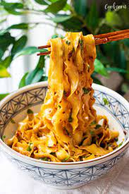

Chili Oil Noodles
Description

This quick & easy chili oil noodles recipe features thick noodles tossed in an incredibly flavorful sauce,
to be prepared in just 10 minutes! This easy noodle recipe was heavily inspired by a Chinese dish called You Po Mian (油泼面)
which is made by pouring hot oil over aromatics. Traditionally, these chili oil noodles are made with handmade noodles.
Ingredients
- Garlic
- Olive Oil
- Miso Paste
- Chilli Oil Crisps
- Shaved Noodles
- Vegetables/Meat (Optional)
Steps
- Boil the noodles for 5 minutes
- Fry garlic in olive oil until golden and add 1 teaspoon of miso paste and 1 teaspoon of chilli oil crisps
- Toss the boiled noodles in after straining, fry it until the sauce is infused into it then toss in vegetables/meat to finish